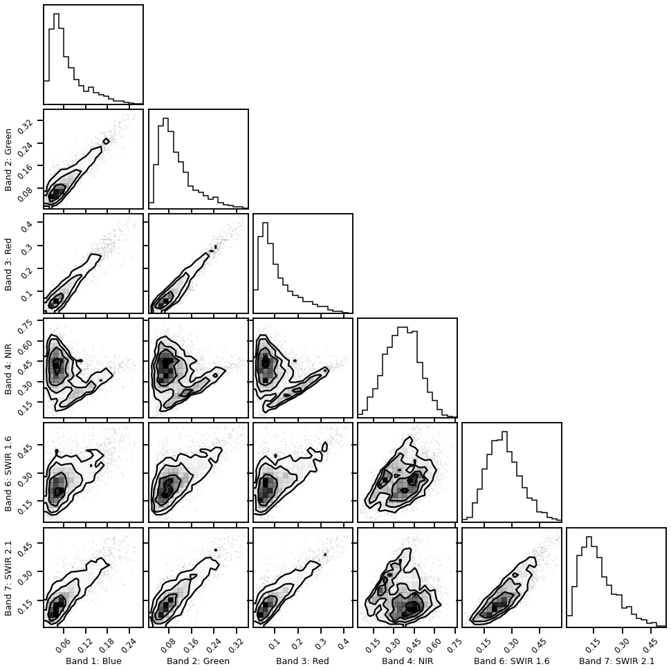
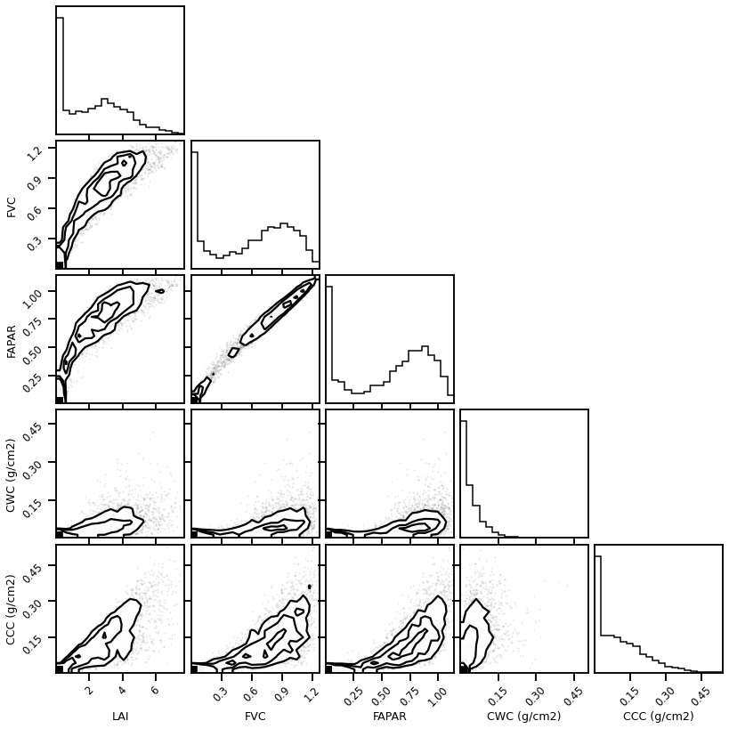
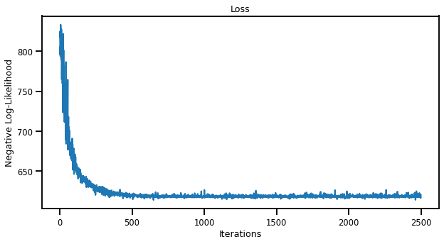
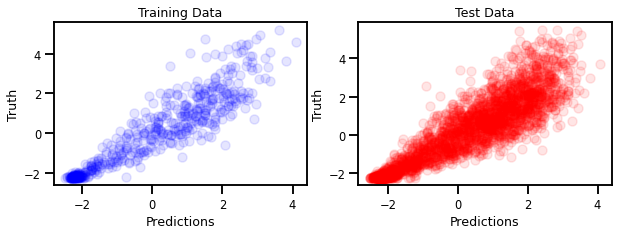
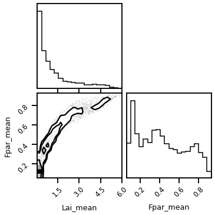
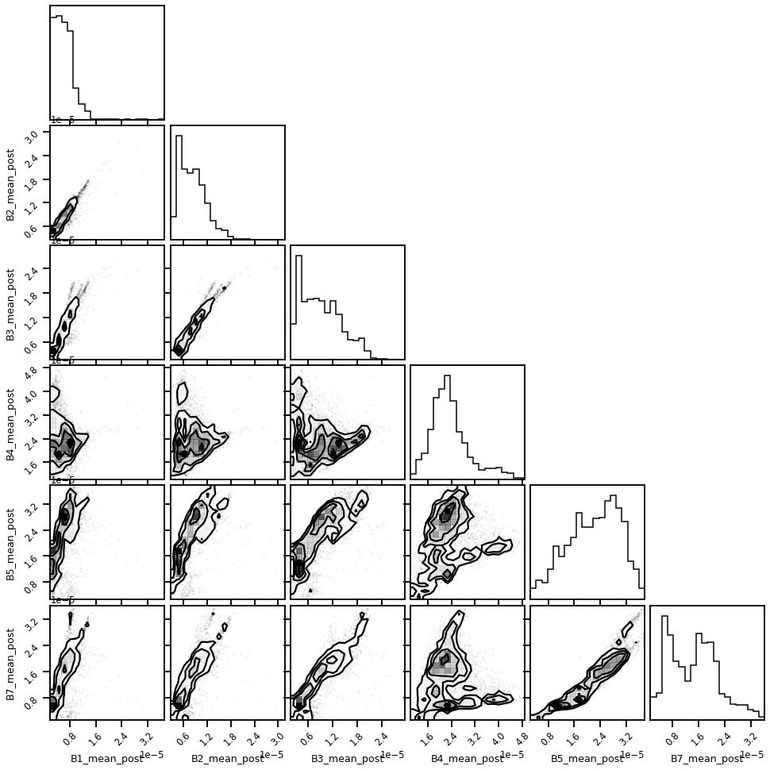
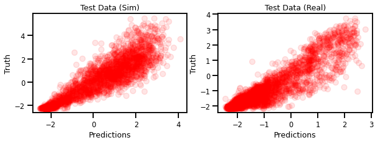
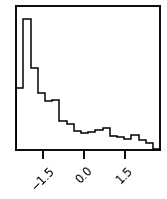

Sim-Real Data Experiment¶
import sys, os
sys.path.append("/home/emmanuel/code/isp_data")
sys.path.append("/home/emmanuel/code/gp_model_zoo/code/numpyro")
from jax.config import config
from jax import device_put
import jax.numpy as jnp
# from jax import random
# import numpy as np
# import chex
config.update("jax_enable_x64", False)
# plot methods
import matplotlib.pyplot as plt
import seaborn as sns
sns.reset_defaults()
sns.set_context(context="talk", font_scale=0.7)
%matplotlib inline
%load_ext lab_black
%load_ext autoreload
%autoreload 2
Load Demo Data¶
from isp_data.simulation import uncertain
X, y = uncertain.load_prosail_training_df()
X.describe()
| Band 1: Blue | Band 2: Green | Band 3: Red | Band 4: NIR | Band 6: SWIR 1.6 | Band 7: SWIR 2.1 | |
|---|---|---|---|---|---|---|
| count | 3303.000000 | 3303.000000 | 3303.000000 | 3303.000000 | 3303.000000 | 3303.000000 |
| mean | 0.068743 | 0.105825 | 0.111666 | 0.362267 | 0.260562 | 0.173583 |
| std | 0.046820 | 0.061809 | 0.079168 | 0.123083 | 0.092832 | 0.094373 |
| min | 0.005332 | 0.006786 | 0.005533 | 0.033154 | 0.033389 | 0.009375 |
| 25% | 0.035533 | 0.060806 | 0.053779 | 0.273694 | 0.194152 | 0.104310 |
| 50% | 0.053992 | 0.089028 | 0.086402 | 0.363865 | 0.252580 | 0.152875 |
| 75% | 0.087720 | 0.134440 | 0.148359 | 0.448729 | 0.317240 | 0.225726 |
| max | 0.279228 | 0.360767 | 0.437059 | 0.766682 | 0.569299 | 0.530368 |
y.describe()
| LAI | FVC | FAPAR | CWC (g/cm2) | CCC (g/cm2) | |
|---|---|---|---|---|---|
| count | 3303.000000 | 3303.000000 | 3303.000000 | 3303.000000 | 3303.000000 |
| mean | 2.262788 | 0.592697 | 0.573906 | 0.040715 | 0.105892 |
| std | 1.853207 | 0.394076 | 0.356829 | 0.047395 | 0.100914 |
| min | 0.000015 | 0.000007 | 0.000010 | 0.000000 | 0.000000 |
| 25% | 0.321631 | 0.157449 | 0.193685 | 0.004334 | 0.011619 |
| 50% | 2.227418 | 0.691581 | 0.680800 | 0.027279 | 0.083860 |
| 75% | 3.640792 | 0.929118 | 0.871570 | 0.058701 | 0.167256 |
| max | 7.764345 | 1.266707 | 1.137658 | 0.506256 | 0.539141 |
import corner
figure = corner.corner(X)

import corner
figure = corner.corner(y)

Select Variable¶
y = y["LAI"]
Standardization¶
from sklearn.preprocessing import StandardScaler
x_transformer = StandardScaler()
X_scaled = x_transformer.fit_transform(X.values)
y_transformer = StandardScaler(with_std=False)
y_scaled = y_transformer.fit_transform(y.values.reshape(-1, 1))
GP Model¶
import chex
import jax
import jax.numpy as jnp
from chex import Array
from src.utils import identity_matrix, add_to_diagonal
from src.kernels import RBF
n_features = X_scaled.shape[1]
rbf_kernel = RBF(length_scale=jnp.ones(n_features), variance=1.0)
K = rbf_kernel.gram(X_scaled)
# check shape
chex.assert_shape(K, (X_scaled.shape[0], X_scaled.shape[0]))
Model¶
# NUMPYRO SETTINGS
import numpyro
import numpyro.distributions as dist
from numpyro.infer.autoguide import AutoDiagonalNormal
from numpyro.infer import SVI, Trace_ELBO
from src.exact import GPRModel
from src.means import zero_mean
jitter = 1e-5
inference = "vi_full"
model = "exact"
def numpyro_model(X, y):
if inference == "map" or "vi_mf" or "vi_full":
# Set priors on hyperparameters.
η = numpyro.sample("variance", dist.HalfCauchy(scale=5.0),)
ℓ = numpyro.sample(
"length_scale", dist.Gamma(2.0, 1.0), sample_shape=(n_features,)
)
σ = numpyro.sample("obs_noise", dist.HalfCauchy(scale=5.0))
elif inference == "mll":
# set params and constraints on hyperparams
η = numpyro.param(
"variance",
init_value=jnp.ones(n_features),
constraints=dist.constraints.positive,
)
ℓ = numpyro.param(
"length_scale", init_value=1.0, constraints=dist.constraints.positive
)
σ = numpyro.param(
"obs_noise", init_value=0.01, onstraints=dist.constraints.positive
)
else:
raise ValueError(f"Unrecognized inference scheme: {inference}")
# Kernel Function
rbf_kernel = RBF(variance=η, length_scale=ℓ)
# GP Model
gp_model = GPRModel(
X=X, y=y, mean=zero_mean, kernel=rbf_kernel, obs_noise=σ, jitter=jitter
)
# Sample y according SGP
return gp_model.to_numpyro(y=y)
def empty_guide(X, y):
pass
# NUMPYRO SETTINGS
with numpyro.handlers.seed(rng_seed=123):
t = numpyro_model(X_scaled, y_scaled)
assert t.shape == y_scaled.shape
Inference¶
from numpyro.infer.autoguide import (
AutoDelta,
AutoMultivariateNormal,
AutoDiagonalNormal,
)
# ===================
# Model
# ===================
# GP model
# delta guide - basically deterministic
if inference == "map":
guide = AutoDelta(numpyro_model)
elif inference == "vi_mf":
guide = AutoDiagonalNormal(numpyro_model)
elif inference == "vi_full":
guide = AutoMultivariateNormal(numpyro_model)
elif inference == "mll":
def empty_guide(X, y):
pass
guide = empty_guide
else:
raise ValueError(f"Unrecognized inference scheme: {inference}")
Training¶
# reproducibility
rng_key = jax.random.PRNGKey(0)
# Setup
optimizer = numpyro.optim.Adam(step_size=0.01)
# optimizer = numpyro.optim.Minimize()
# optimizer = optax.adamw(learning_rate=0.1)
svi = SVI(numpyro_model, guide, optimizer, loss=Trace_ELBO())
svi_results = svi.run(jax.random.PRNGKey(1), 2_500, X_scaled, y_scaled.T)
30%|██▉ | 740/2500 [07:23<17:34, 1.67it/s, init loss: 4616.0176, avg. loss [501-625]: 3849.5605]
---------------------------------------------------------------------------
KeyboardInterrupt Traceback (most recent call last)
<ipython-input-226-b7bcd564ba07> in <module>
8 # optimizer = optax.adamw(learning_rate=0.1)
9 svi = SVI(numpyro_model, guide, optimizer, loss=Trace_ELBO())
---> 10 svi_results = svi.run(jax.random.PRNGKey(1), 2_500, X_scaled, y_scaled.T)
~/.conda/envs/jax_py38/lib/python3.8/site-packages/numpyro/infer/svi.py in run(self, rng_key, num_steps, progress_bar, stable_update, *args, **kwargs)
205 batch = max(num_steps // 20, 1)
206 for i in t:
--> 207 svi_state, loss = jit(body_fn)(svi_state, None)
208 losses.append(loss)
209 if i % batch == 0:
~/.conda/envs/jax_py38/lib/python3.8/site-packages/jax/_src/traceback_util.py in reraise_with_filtered_traceback(*args, **kwargs)
137 def reraise_with_filtered_traceback(*args, **kwargs):
138 try:
--> 139 return fun(*args, **kwargs)
140 except Exception as e:
141 if not is_under_reraiser(e):
~/.conda/envs/jax_py38/lib/python3.8/site-packages/jax/api.py in f_jitted(*args, **kwargs)
405 return cache_miss(*args, **kwargs)[0] # probably won't return
406 else:
--> 407 return cpp_jitted_f(*args, **kwargs)
408
409 f_jitted._cpp_jitted_f = cpp_jitted_f
~/.conda/envs/jax_py38/lib/python3.8/site-packages/jax/api.py in cache_miss(*args, **kwargs)
293 _check_arg(arg)
294 flat_fun, out_tree = flatten_fun(f, in_tree)
--> 295 out_flat = xla.xla_call(
296 flat_fun,
297 *args_flat,
~/.conda/envs/jax_py38/lib/python3.8/site-packages/jax/core.py in bind(self, fun, *args, **params)
1400
1401 def bind(self, fun, *args, **params):
-> 1402 return call_bind(self, fun, *args, **params)
1403
1404 def process(self, trace, fun, tracers, params):
~/.conda/envs/jax_py38/lib/python3.8/site-packages/jax/core.py in call_bind(primitive, fun, *args, **params)
1391 tracers = map(top_trace.full_raise, args)
1392 with maybe_new_sublevel(top_trace):
-> 1393 outs = primitive.process(top_trace, fun, tracers, params)
1394 return map(full_lower, apply_todos(env_trace_todo(), outs))
1395
~/.conda/envs/jax_py38/lib/python3.8/site-packages/jax/core.py in process(self, trace, fun, tracers, params)
1403
1404 def process(self, trace, fun, tracers, params):
-> 1405 return trace.process_call(self, fun, tracers, params)
1406
1407 def post_process(self, trace, out_tracers, params):
~/.conda/envs/jax_py38/lib/python3.8/site-packages/jax/core.py in process_call(self, primitive, f, tracers, params)
598
599 def process_call(self, primitive, f, tracers, params):
--> 600 return primitive.impl(f, *tracers, **params)
601 process_map = process_call
602
~/.conda/envs/jax_py38/lib/python3.8/site-packages/jax/interpreters/xla.py in _xla_call_impl(fun, device, backend, name, donated_invars, *args)
578 *unsafe_map(arg_spec, args))
579 try:
--> 580 return compiled_fun(*args)
581 except FloatingPointError:
582 assert config.jax_debug_nans or config.jax_debug_infs # compiled_fun can only raise in this case
~/.conda/envs/jax_py38/lib/python3.8/site-packages/jax/interpreters/xla.py in _execute_compiled(compiled, avals, handlers, *args)
838 device, = compiled.local_devices()
839 input_bufs = list(it.chain.from_iterable(device_put(x, device) for x in args if x is not token))
--> 840 out_bufs = compiled.execute(input_bufs)
841 check_special(xla_call_p.name, out_bufs)
842 return [handler(*bs) for handler, bs in zip(handlers, _partition_outputs(avals, out_bufs))]
KeyboardInterrupt:
fig, ax = plt.subplots(figsize=(10, 5))
ax.plot(svi_results.losses)
ax.set(title="Loss", xlabel="Iterations", ylabel="Negative Log-Likelihood")
plt.show()

Extract Params¶
from pprint import pprint
# Take them directly
learned_params = svi_results.params
pprint(learned_params)
if inference != "mll":
learned_params = guide.median(learned_params)
pprint(learned_params)
{'auto_loc': DeviceArray([ 1.544623 , 1.5740522 , 1.2657267 , 0.55976665,
1.1328518 , 1.5256515 , -0.5311885 , 1.3698128 ], dtype=float32),
'auto_scale_tril': DeviceArray([[ 0.34178266, 0. , 0. , 0. ,
0. , 0. , 0. , 0. ],
[ 0.02424494, 0.29390287, 0. , 0. ,
0. , 0. , 0. , 0. ],
[ 0.07130086, 0.03048686, 0.29069328, 0. ,
0. , 0. , 0. , 0. ],
[ 0.01859847, -0.03496074, 0.01662747, 0.2022222 ,
0. , 0. , 0. , 0. ],
[-0.01841398, 0.03388834, 0.03731995, 0.0143457 ,
0.21087669, 0. , 0. , 0. ],
[ 0.0482376 , 0.01975282, 0.03151058, 0.00086418,
-0.02171634, 0.35757878, 0. , 0. ],
[ 0.01527254, 0.02160287, -0.00889867, 0.00786469,
-0.03262389, -0.00237045, 0.06076211, 0. ],
[ 0.04521427, -0.02116465, 0.11389472, 0.12287836,
0.12035562, 0.03018668, -0.0058074 , 0.30646458]], dtype=float32)}
{'length_scale': DeviceArray([4.686205 , 4.826165 , 3.5456684, 1.750264 , 3.1044974,
4.598138 ], dtype=float32),
'obs_noise': DeviceArray(0.5879058, dtype=float32),
'variance': DeviceArray(3.9346142, dtype=float32)}
Predictions¶
from src.exact import init_gp_predictive, get_cond_params
gp_pred = init_gp_predictive(
RBF, learned_params, X_scaled, y_scaled, jitter=0.0
)
mu = gp_pred.predict_mean(jnp.array(X_scaled))
---------------------------------------------------------------------------
FilteredStackTrace Traceback (most recent call last)
<ipython-input-194-008caf87f863> in <module>
2
----> 3 gp_pred = init_gp_predictive(
4 RBF, learned_params, X_scaled, y_scaled, jitter=0.0
~/code/gp_model_zoo/code/numpyro/src/exact.py in init_gp_predictive(kernel, params, x, y, jitter)
210
--> 211 weights = cho_solve((Lff, True), y)
212
~/.conda/envs/jax_py38/lib/python3.8/site-packages/jax/_src/scipy/linalg.py in cho_solve(***failed resolving arguments***)
59 c, lower = c_and_lower
---> 60 return _cho_solve(c, b, lower)
61
~/.conda/envs/jax_py38/lib/python3.8/site-packages/jax/_src/scipy/linalg.py in _cho_solve(c, b, lower)
48 c, b = np_linalg._promote_arg_dtypes(jnp.asarray(c), jnp.asarray(b))
---> 49 lax_linalg._check_solve_shapes(c, b)
50 b = lax_linalg.triangular_solve(c, b, left_side=True, lower=lower,
FilteredStackTrace: ValueError: The arguments to solve must have shapes a=[..., m, m] and b=[..., m, k] or b=[..., m]; got a=(3303, 3303) and b=(16515, 1)
The stack trace above excludes JAX-internal frames.
The following is the original exception that occurred, unmodified.
--------------------
The above exception was the direct cause of the following exception:
ValueError Traceback (most recent call last)
<ipython-input-194-008caf87f863> in <module>
1 from src.exact import init_gp_predictive, get_cond_params
2
----> 3 gp_pred = init_gp_predictive(
4 RBF, learned_params, X_scaled, y_scaled, jitter=0.0
5 )
~/code/gp_model_zoo/code/numpyro/src/exact.py in init_gp_predictive(kernel, params, x, y, jitter)
209 Lff = precompute(x, obs_noise, kernel, jitter=jitter)
210
--> 211 weights = cho_solve((Lff, True), y)
212
213 def predict_mean(xtest):
~/.conda/envs/jax_py38/lib/python3.8/site-packages/jax/_src/scipy/linalg.py in cho_solve(***failed resolving arguments***)
58 del overwrite_b, check_finite
59 c, lower = c_and_lower
---> 60 return _cho_solve(c, b, lower)
61
62 @_wraps(scipy.linalg.svd)
~/.conda/envs/jax_py38/lib/python3.8/site-packages/jax/_src/traceback_util.py in reraise_with_filtered_traceback(*args, **kwargs)
137 def reraise_with_filtered_traceback(*args, **kwargs):
138 try:
--> 139 return fun(*args, **kwargs)
140 except Exception as e:
141 if not is_under_reraiser(e):
~/.conda/envs/jax_py38/lib/python3.8/site-packages/jax/api.py in f_jitted(*args, **kwargs)
405 return cache_miss(*args, **kwargs)[0] # probably won't return
406 else:
--> 407 return cpp_jitted_f(*args, **kwargs)
408
409 f_jitted._cpp_jitted_f = cpp_jitted_f
~/.conda/envs/jax_py38/lib/python3.8/site-packages/jax/api.py in cache_miss(*args, **kwargs)
293 _check_arg(arg)
294 flat_fun, out_tree = flatten_fun(f, in_tree)
--> 295 out_flat = xla.xla_call(
296 flat_fun,
297 *args_flat,
~/.conda/envs/jax_py38/lib/python3.8/site-packages/jax/core.py in bind(self, fun, *args, **params)
1400
1401 def bind(self, fun, *args, **params):
-> 1402 return call_bind(self, fun, *args, **params)
1403
1404 def process(self, trace, fun, tracers, params):
~/.conda/envs/jax_py38/lib/python3.8/site-packages/jax/core.py in call_bind(primitive, fun, *args, **params)
1391 tracers = map(top_trace.full_raise, args)
1392 with maybe_new_sublevel(top_trace):
-> 1393 outs = primitive.process(top_trace, fun, tracers, params)
1394 return map(full_lower, apply_todos(env_trace_todo(), outs))
1395
~/.conda/envs/jax_py38/lib/python3.8/site-packages/jax/core.py in process(self, trace, fun, tracers, params)
1403
1404 def process(self, trace, fun, tracers, params):
-> 1405 return trace.process_call(self, fun, tracers, params)
1406
1407 def post_process(self, trace, out_tracers, params):
~/.conda/envs/jax_py38/lib/python3.8/site-packages/jax/core.py in process_call(self, primitive, f, tracers, params)
598
599 def process_call(self, primitive, f, tracers, params):
--> 600 return primitive.impl(f, *tracers, **params)
601 process_map = process_call
602
~/.conda/envs/jax_py38/lib/python3.8/site-packages/jax/interpreters/xla.py in _xla_call_impl(fun, device, backend, name, donated_invars, *args)
575
576 def _xla_call_impl(fun: lu.WrappedFun, *args, device, backend, name, donated_invars):
--> 577 compiled_fun = _xla_callable(fun, device, backend, name, donated_invars,
578 *unsafe_map(arg_spec, args))
579 try:
~/.conda/envs/jax_py38/lib/python3.8/site-packages/jax/linear_util.py in memoized_fun(fun, *args)
258 fun.populate_stores(stores)
259 else:
--> 260 ans = call(fun, *args)
261 cache[key] = (ans, fun.stores)
262
~/.conda/envs/jax_py38/lib/python3.8/site-packages/jax/interpreters/xla.py in _xla_callable(fun, device, backend, name, donated_invars, *arg_specs)
652 abstract_args, arg_devices = unzip2(arg_specs)
653 if config.omnistaging_enabled:
--> 654 jaxpr, out_avals, consts = pe.trace_to_jaxpr_final(fun, abstract_args)
655 if any(isinstance(c, core.Tracer) for c in consts):
656 raise core.UnexpectedTracerError("Encountered an unexpected tracer.")
~/.conda/envs/jax_py38/lib/python3.8/site-packages/jax/interpreters/partial_eval.py in trace_to_jaxpr_final(fun, in_avals)
1226 main.source_info = fun_sourceinfo(fun.f) # type: ignore
1227 main.jaxpr_stack = () # type: ignore
-> 1228 jaxpr, out_avals, consts = trace_to_subjaxpr_dynamic(fun, main, in_avals)
1229 del fun, main
1230 return jaxpr, out_avals, consts
~/.conda/envs/jax_py38/lib/python3.8/site-packages/jax/interpreters/partial_eval.py in trace_to_subjaxpr_dynamic(fun, main, in_avals)
1206 trace = DynamicJaxprTrace(main, core.cur_sublevel())
1207 in_tracers = map(trace.new_arg, in_avals)
-> 1208 ans = fun.call_wrapped(*in_tracers)
1209 out_tracers = map(trace.full_raise, ans)
1210 jaxpr, out_avals, consts = frame.to_jaxpr(in_tracers, out_tracers)
~/.conda/envs/jax_py38/lib/python3.8/site-packages/jax/linear_util.py in call_wrapped(self, *args, **kwargs)
164
165 try:
--> 166 ans = self.f(*args, **dict(self.params, **kwargs))
167 except:
168 # Some transformations yield from inside context managers, so we have to
~/.conda/envs/jax_py38/lib/python3.8/site-packages/jax/_src/scipy/linalg.py in _cho_solve(c, b, lower)
47 def _cho_solve(c, b, lower):
48 c, b = np_linalg._promote_arg_dtypes(jnp.asarray(c), jnp.asarray(b))
---> 49 lax_linalg._check_solve_shapes(c, b)
50 b = lax_linalg.triangular_solve(c, b, left_side=True, lower=lower,
51 transpose_a=not lower, conjugate_a=not lower)
~/.conda/envs/jax_py38/lib/python3.8/site-packages/jax/_src/lax/linalg.py in _check_solve_shapes(a, b)
247 if not (a.ndim >= 2 and b.ndim in [a.ndim, a.ndim - 1] and
248 a.shape[-1] == a.shape[-2] == b.shape[a.ndim - 2]):
--> 249 raise ValueError(
250 "The arguments to solve must have shapes a=[..., m, m] and "
251 f"b=[..., m, k] or b=[..., m]; got a={a.shape} and b={b.shape}")
ValueError: The arguments to solve must have shapes a=[..., m, m] and b=[..., m, k] or b=[..., m]; got a=(3303, 3303) and b=(16515, 1)
fig, ax = plt.subplots(ncols=2, figsize=(10, 3))
ax[0].scatter(mu_train, ytrain_scaled, alpha=0.1, c="blue")
ax[0].set(xlabel="Predictions", ylabel="Truth", title="Training Data")
ax[1].scatter(mu_test, ytest_scaled, alpha=0.1, c="red")
ax[1].set(xlabel="Predictions", ylabel="Truth", title="Test Data")
plt.show()

Statistics¶
from uncertainty_toolbox import get_all_metrics
mu, var = gp_pred.predict_y(Xtest_scaled)
std = jnp.sqrt(var.squeeze())
metrics = get_all_metrics(
y_pred=mu.ravel(), y_std=std.ravel(), y_true=ytest_scaled.ravel()
)
(1/n) Calculating accuracy metrics
(2/n) Calculating average calibration metrics
0%| | 0/10 [00:00<?, ?it/s]
(3/n) Calculating adversarial group calibration metrics
[1/2] for mean absolute calibration error
Measuring adversarial group calibration by spanning group size between 0.0 and 1.0, in 10 intervals
100%|██████████| 10/10 [00:08<00:00, 1.19it/s]
0%| | 0/10 [00:00<?, ?it/s]
[2/2] for root mean squared calibration error
Measuring adversarial group calibration by spanning group size between 0.0 and 1.0, in 10 intervals
100%|██████████| 10/10 [00:08<00:00, 1.21it/s]
(4/n) Calculating sharpness metrics
(n/n) Calculating proper scoring rule metrics
**Finished Calculating All Metrics**
===================== Accuracy Metrics =====================
MAE 0.536
RMSE 0.768
MDAE 0.347
MARPD 55.437
R2 0.827
Correlation 0.910
=============== Average Calibration Metrics ================
Root-mean-squared Calibration Error 0.107
Mean-absolute Calibration Error 0.090
Miscalibration Area 0.091
========== Adversarial Group Calibration Metrics ===========
Mean-absolute Adversarial Group Calibration Error
Group Size: 0.11 -- Calibration Error: 0.113
Group Size: 0.56 -- Calibration Error: 0.097
Group Size: 1.00 -- Calibration Error: 0.090
Root-mean-squared Adversarial Group Calibration Error
Group Size: 0.11 -- Calibration Error: 0.135
Group Size: 0.56 -- Calibration Error: 0.118
Group Size: 1.00 -- Calibration Error: 0.107
==================== Sharpness Metrics =====================
Sharpness 0.787
=================== Scoring Rule Metrics ===================
Negative-log-likelihood 1.158
CRPS 0.417
Check Score 0.210
Interval Score 2.186
metrics = get_all_metrics(
y_pred=mu.ravel(), y_std=std.ravel(), y_true=ytest_scaled.ravel()
)
(1/n) Calculating accuracy metrics
(2/n) Calculating average calibration metrics
0%| | 0/10 [00:00<?, ?it/s]
(3/n) Calculating adversarial group calibration metrics
[1/2] for mean absolute calibration error
Measuring adversarial group calibration by spanning group size between 0.0 and 1.0, in 10 intervals
100%|██████████| 10/10 [00:08<00:00, 1.20it/s]
0%| | 0/10 [00:00<?, ?it/s]
[2/2] for root mean squared calibration error
Measuring adversarial group calibration by spanning group size between 0.0 and 1.0, in 10 intervals
100%|██████████| 10/10 [00:08<00:00, 1.20it/s]
(4/n) Calculating sharpness metrics
(n/n) Calculating proper scoring rule metrics
**Finished Calculating All Metrics**
===================== Accuracy Metrics =====================
MAE 0.536
RMSE 0.769
MDAE 0.349
MARPD 55.411
R2 0.827
Correlation 0.909
=============== Average Calibration Metrics ================
Root-mean-squared Calibration Error 0.105
Mean-absolute Calibration Error 0.088
Miscalibration Area 0.088
========== Adversarial Group Calibration Metrics ===========
Mean-absolute Adversarial Group Calibration Error
Group Size: 0.11 -- Calibration Error: 0.111
Group Size: 0.56 -- Calibration Error: 0.096
Group Size: 1.00 -- Calibration Error: 0.088
Root-mean-squared Adversarial Group Calibration Error
Group Size: 0.11 -- Calibration Error: 0.129
Group Size: 0.56 -- Calibration Error: 0.114
Group Size: 1.00 -- Calibration Error: 0.105
==================== Sharpness Metrics =====================
Sharpness 0.775
=================== Scoring Rule Metrics ===================
Negative-log-likelihood 1.158
CRPS 0.416
Check Score 0.210
Interval Score 2.187
Plots¶
from uncertainty_toolbox import viz as utviz
def plot_all_uncertainty(
y_pred, y_std, y_true,
):
utviz.plot_parity(y_pred=mu.ravel(), y_true=y_true.ravel())
utviz.plot_calibration(y_pred=mu.ravel(), y_std=std.ravel(), y_true=y_true.ravel())
utviz.plot_intervals_ordered(
y_pred=mu.ravel(), y_std=std.ravel(), y_true=y_true.ravel(), n_subset=100
)
utviz.plot_sharpness(y_std=std.ravel(),)
utviz.plot_adversarial_group_calibration(
y_pred=mu.ravel(), y_std=std.ravel(), y_true=y_true.ravel(), n_subset=100
)
return None
¶
plot_all_uncertainty(mu, std, ytest_scaled)
Lims is None. Setting lims now:
min_max_true: (-2.25253434829924, 5.51179509509576)
min_max_pred: (DeviceArray(-2.5257664, dtype=float32), DeviceArray(4.0732174, dtype=float32))
lims: (-2.525766372680664, 5.51179509509576)
lims_ext: (-3.3295225194583065, 6.315551241873402)
/home/emmanuel/.conda/envs/jax_py38/lib/python3.8/site-packages/seaborn/_decorators.py:36: FutureWarning: Pass the following variables as keyword args: x, y. From version 0.12, the only valid positional argument will be `data`, and passing other arguments without an explicit keyword will result in an error or misinterpretation.
warnings.warn(
/home/emmanuel/.conda/envs/jax_py38/lib/python3.8/site-packages/seaborn/distributions.py:2557: FutureWarning: `distplot` is a deprecated function and will be removed in a future version. Please adapt your code to use either `displot` (a figure-level function with similar flexibility) or `histplot` (an axes-level function for histograms).
warnings.warn(msg, FutureWarning)
Test Data¶
ds_real = uncertain.load_histarfm_testing_df()
# drop nans
ds_real = ds_real.dropna()
# parse
Xreal_mu, Xreal_std, Y_real = uncertain.parse_histarfm_ds(ds_real)
/home/emmanuel/.conda/envs/jax_py38/lib/python3.8/site-packages/IPython/core/async_helpers.py:68: PerformanceWarning: indexing past lexsort depth may impact performance.
coro.send(None)
/home/emmanuel/.conda/envs/jax_py38/lib/python3.8/site-packages/pandas/core/indexing.py:1783: SettingWithCopyWarning:
A value is trying to be set on a copy of a slice from a DataFrame.
Try using .loc[row_indexer,col_indexer] = value instead
See the caveats in the documentation: https://pandas.pydata.org/pandas-docs/stable/user_guide/indexing.html#returning-a-view-versus-a-copy
self.obj[item_labels[indexer[info_axis]]] = value
figure = corner.corner(Y_real)

Y_real.describe()
| Lai_mean | Fpar_mean | |
|---|---|---|
| count | 3320.000000 | 3320.000000 |
| mean | 1.287666 | 0.424059 |
| std | 1.320577 | 0.236908 |
| min | 0.100000 | 0.060000 |
| 25% | 0.299295 | 0.210505 |
| 50% | 0.754397 | 0.392066 |
| 75% | 1.761429 | 0.620908 |
| max | 6.007066 | 0.929591 |
# Xtrain_scaled
figure = corner.corner(Xreal_mu * mu_scale, hist_factor=2)

Transforms¶
Xreal_mu_scaled = x_transformer.transform(Xreal_mu)
Xreal_std_scaled = x_transformer.transform(Xreal_std)
Y_real_scaled = y_transformer.transform(Y_real["Lai_mean"].values.reshape(-1, 1))
Y_real_scaled.min(), Y_real_scaled.max()
(-2.1525496049042396, 3.754516055624058)
mu_real = gp_pred.predict_mean(jnp.array(Xreal_mu_scaled))
fig, ax = plt.subplots(ncols=2, figsize=(10, 3))
ax[0].scatter(mu_test, ytest_scaled, alpha=0.1, c="red")
ax[0].set(xlabel="Predictions", ylabel="Truth", title="Test Data (Sim)")
ax[1].scatter(mu_real, Y_real_scaled, alpha=0.1, c="red")
ax[1].set(xlabel="Predictions", ylabel="Truth", title="Test Data (Real)")
plt.show()

mu, var = gp_pred.predict_y(jnp.array(Xreal_mu_scaled))
std = jnp.sqrt(var.squeeze())
figure = corner.corner(mu)
figure = corner.corner(Y_real_scaled)


Statistics¶
metrics = get_all_metrics(
y_pred=mu.ravel(), y_std=std.ravel(), y_true=Y_real_scaled.ravel()
)
(1/n) Calculating accuracy metrics
(2/n) Calculating average calibration metrics
0%| | 0/10 [00:00<?, ?it/s]
(3/n) Calculating adversarial group calibration metrics
[1/2] for mean absolute calibration error
Measuring adversarial group calibration by spanning group size between 0.0 and 1.0, in 10 intervals
100%|██████████| 10/10 [00:07<00:00, 1.27it/s]
0%| | 0/10 [00:00<?, ?it/s]
[2/2] for root mean squared calibration error
Measuring adversarial group calibration by spanning group size between 0.0 and 1.0, in 10 intervals
100%|██████████| 10/10 [00:07<00:00, 1.27it/s]
(4/n) Calculating sharpness metrics
(n/n) Calculating proper scoring rule metrics
**Finished Calculating All Metrics**
===================== Accuracy Metrics =====================
MAE 0.372
RMSE 0.528
MDAE 0.246
MARPD 39.306
R2 0.840
Correlation 0.918
=============== Average Calibration Metrics ================
Root-mean-squared Calibration Error 0.201
Mean-absolute Calibration Error 0.177
Miscalibration Area 0.179
========== Adversarial Group Calibration Metrics ===========
Mean-absolute Adversarial Group Calibration Error
Group Size: 0.11 -- Calibration Error: 0.194
Group Size: 0.56 -- Calibration Error: 0.182
Group Size: 1.00 -- Calibration Error: 0.177
Root-mean-squared Adversarial Group Calibration Error
Group Size: 0.11 -- Calibration Error: 0.225
Group Size: 0.56 -- Calibration Error: 0.208
Group Size: 1.00 -- Calibration Error: 0.201
==================== Sharpness Metrics =====================
Sharpness 0.786
=================== Scoring Rule Metrics ===================
Negative-log-likelihood 0.904
CRPS 0.305
Check Score 0.154
Interval Score 1.642
Plots¶
plot_all_uncertainty(mu, std, Y_real_scaled)
Lims is None. Setting lims now:
min_max_true: (-2.1525496049042396, 3.754516055624058)
min_max_pred: (DeviceArray(-2.4744442, dtype=float32), DeviceArray(2.77252, dtype=float32))
lims: (-2.4744441509246826, 3.754516055624058)
lims_ext: (-3.0973401715795568, 4.377412076278932)
/home/emmanuel/.conda/envs/jax_py38/lib/python3.8/site-packages/seaborn/_decorators.py:36: FutureWarning: Pass the following variables as keyword args: x, y. From version 0.12, the only valid positional argument will be `data`, and passing other arguments without an explicit keyword will result in an error or misinterpretation.
warnings.warn(
/home/emmanuel/.conda/envs/jax_py38/lib/python3.8/site-packages/seaborn/distributions.py:2557: FutureWarning: `distplot` is a deprecated function and will be removed in a future version. Please adapt your code to use either `displot` (a figure-level function with similar flexibility) or `histplot` (an axes-level function for histograms).
warnings.warn(msg, FutureWarning)